本章目录
- This chapter covers
- Weight parameters
- 5.1 Evaluating generative text models
- 5.1.1 Using GPT to generate text
- 5.1.2 Calculating the text generation loss
- Backpropagation
- Cross entropy loss
- Perplexity
- 5.1.3 Calculating the training and validation set losses
- The cost of pretraining LLMs
- 5.2 Training an LLM
- AdamW
- 5.3 Decoding strategies to control randomness
- 5.3.1 Temperature scaling
- Exercise 5.1
- 5.3.2 Top-k sampling
- 5.3.3 Modifying the text generation function
- Exercise 5.2
- Exercise 5.3
- 5.4 Loading and saving model weights in PyTorch
- Exercise 5.4
- 5.5 Loading pretrained weights from OpenAI
- Exercise 5.5
- Exercise 5.6
- Summary
Pretraining on unlabeled data#
This chapter covers#
Thus far, we have implemented the data sampling and attention mechanism and coded the LLM architecture. It is now time to implement a training function and pretrain the LLM. We will learn about basic model evaluation techniques to measure the quality of the generated text, which is a requirement for optimizing the LLM during the training process. Moreover, we will discuss how to load pretrained weights, giving our LLM a solid starting point for fine-tuning. Figure 5.1 lays out our overall plan, highlighting what we will discuss in this chapter.
128
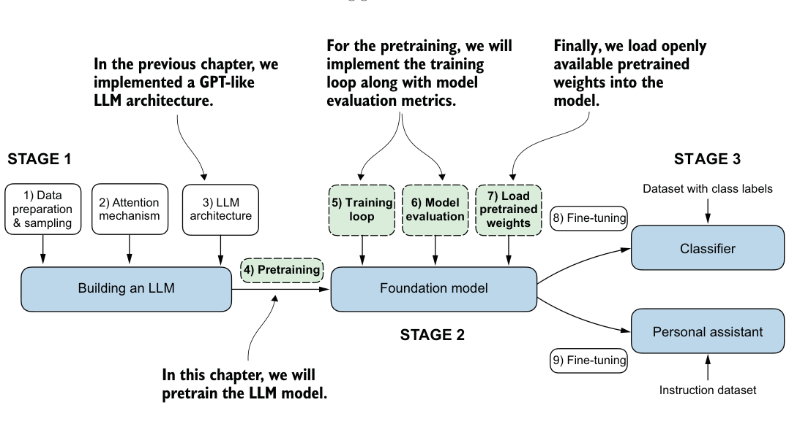
Weight parameters #
In the context of LLMs and other deep learning models, weights refer to the trainable
parameters that the learning process adjusts. These weights are also known as
weight parameters or simply parameters. In frameworks like PyTorch, these weights
are stored in linear layers; we used these to implement the multi-head attention mod-
ule in chapter 3 and the GPTModel in chapter 4. After initializing a layer (new_layer
= torch.nn.Linear(...)), we can access its weights through the .weight attri-
bute, new_layer.weight. Additionally, for convenience, PyTorch allows direct
access to all a model’s trainable parameters, including weights and biases, through
the method model.parameters(), which we will use later when implementing the
model training.
5.1 Evaluating generative text models#
After briefly recapping the text generation from chapter 4, we will set up our LLM for text generation and then discuss basic ways to evaluate the quality of the generated text. We will then calculate the training and validation losses. Figure 5.2 shows the topics covered in this chapter, with these first three steps highlighted.
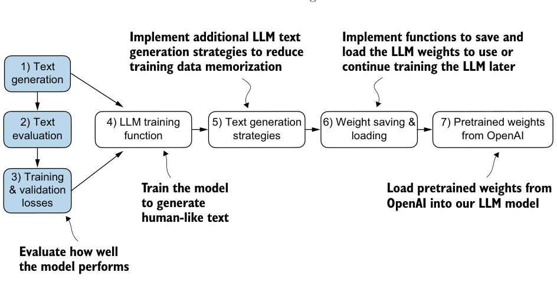
5.1.1 Using GPT to generate text#
Let’s set up the LLM and briefly recap the text generation process we implemented in chapter 4. We begin by initializing the GPT model that we will later evaluate and train using the GPTModel class and GPT_CONFIG_124M dictionary (see chapter 4):
代码旁注 2 条
- We shorten the context length from 1,024 to 256 tokens.
- It’s possible and common to set dropout to 0.
import torch
from chapter04 import GPTModel
GPT_CONFIG_124M = {
"vocab_size": 50257,
"context_length": 256,
"emb_dim": 768,
"n_heads": 12,
"n_layers": 12,
"drop_rate": 0.1,
"qkv_bias": False
}
torch.manual_seed(123)
model = GPTModel(GPT_CONFIG_124M)
model.eval()Considering the GPT_CONFIG_124M dictionary, the only adjustment we have made compared to the previous chapter is that we have reduced the context length (context_ length) to 256 tokens. This modification reduces the computational demands of training the model, making it possible to carry out the training on a standard laptop computer.
Originally, the GPT-2 model with 124 million parameters was configured to handle up to 1,024 tokens. After the training process, we will update the context size setting
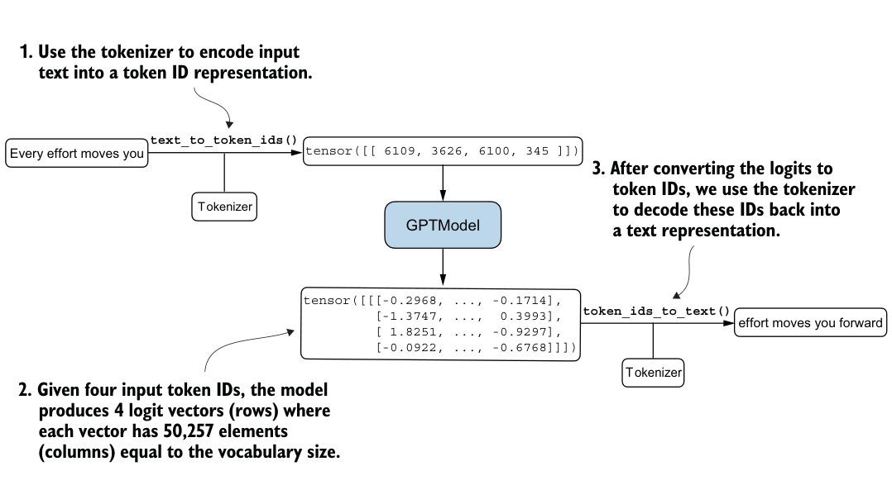
Listing 5.1Utility functions for text to token ID conversion
and load pretrained weights to work with a model configured for a 1,024-token context length.
Using the GPTModel instance, we adopt the generate_text_simple function from chapter 4 and introduce two handy functions: text_to_token_ ids and token_ids_ to_text. These functions facilitate the conversion between text and token representations, a technique we will utilize throughout this chapter.
Figure 5.3 illustrates a three-step text generation process using a GPT model. First, the tokenizer converts input text into a series of token IDs (see chapter 2). Second, the model receives these token IDs and generates corresponding logits, which are vectors representing the probability distribution for each token in the vocabulary (see chapter 4). Third, these logits are converted back into token IDs, which the tokenizer decodes into human-readable text, completing the cycle from textual input to textual output.
We can implement the text generation process, as shown in the following listing.
import tiktoken
from chapter04 import generate_text_simple
def text_to_token_ids(text, tokenizer):
encoded = tokenizer.encode(text, allowed_special={'<|endoftext|>'})
encoded_tensor = torch.tensor(encoded).unsqueeze(0)
return encoded_tensor
def token_ids_to_text(token_ids, tokenizer):
flat = token_ids.squeeze(0)
return tokenizer.decode(flat.tolist())
start_context = "Every effort moves you"
tokenizer = tiktoken.get_encoding("gpt2")
token_ids = generate_text_simple(
model=model,
idx=text_to_token_ids(start_context, tokenizer),
max_new_tokens=10,
context_size=GPT_CONFIG_124M["context_length"]
)
print("Output text:\n", token_ids_to_text(token_ids, tokenizer))Using this code, the model generates the following text:
Output text:
Every effort moves you rentingetic wasn? refres RexMeCHicular strenClearly, the model isn’t yet producing coherent text because it hasn’t undergone training. To define what makes text “coherent” or “high quality,” we have to implement a numerical method to evaluate the generated content. This approach will enable us to monitor and enhance the model’s performance throughout its training process.
Next, we will calculate a loss metric for the generated outputs. This loss serves as a progress and success indicator of the training progress. Furthermore, in later chapters, when we fine-tune our LLM, we will review additional methodologies for assessing model quality.
5.1.2 Calculating the text generation loss#
Next, let’s explore techniques for numerically assessing text quality generated during training by calculating a text generation loss. We will go over this topic step by step with a practical example to make the concepts clear and applicable, beginning with a short recap of how the data is loaded and how the text is generated via the
generate_text_simple function.
Figure 5.4 illustrates the overall flow from input text to LLM-generated text using a five-step procedure. This text-generation process shows what the generate_text_simple function does internally. We need to perform these same initial steps before we can compute a loss that measures the generated text quality later in this section.
Figure 5.4 outlines the text generation process with a small seven-token vocabulary to fit this image on a single page. However, our GPTModel works with a much larger
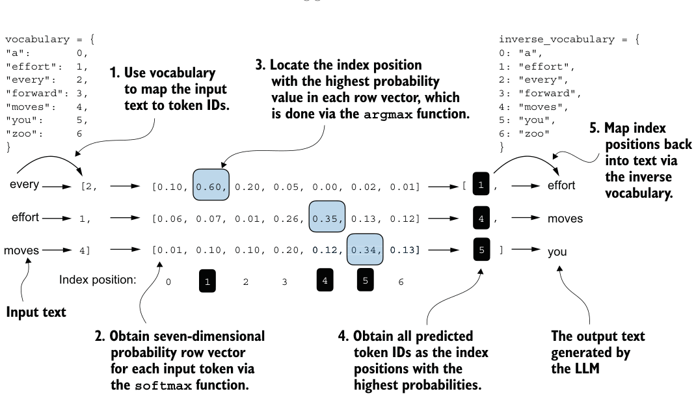
vocabulary consisting of 50,257 words; hence, the token IDs in the following code will range from 0 to 50,256 rather than 0 to 6.
Also, figure 5.4 only shows a single text example ("every effort moves") for simplicity. In the following hands-on code example that implements the steps in the figure, we will work with two input examples for the GPT model ("every effort moves"
and "I really like").
Consider these two input examples, which have already been mapped to token IDs (figure 5.4, step 1):
inputs = torch.tensor([[16833, 3626, 6100], # ["every effort moves",
[40, 1107, 588]]) # "I really like"]Matching these inputs, the targets contain the token IDs we want the model to produce:
targets = torch.tensor([[3626, 6100, 345 ], # [" effort moves you",
[1107, 588, 11311]]) # " really like chocolate"]Note that the targets are the inputs but shifted one position forward, a concept we covered in chapter 2 during the implementation of the data loader. This shifting strategy is crucial for teaching the model to predict the next token in a sequence.
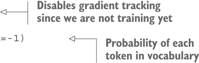
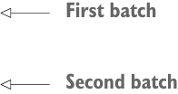
Now we feed the inputs into the model to calculate logits vectors for the two input examples, each comprising three tokens. Then we apply the softmax function to transform these logits into probability scores (probas; figure 5.4, step 2):
代码旁注 2 条
- Disables gradient tracking since we are not training yet
- Probability of each token in vocabulary
with torch.no_grad(): logits = model(inputs)
probas = torch.softmax(logits, dim=-1)
print(probas.shape)The resulting tensor dimension of the probability score (probas) tensor is
torch.Size([2, 3, 50257])The first number, 2, corresponds to the two examples (rows) in the inputs, also known as batch size. The second number, 3, corresponds to the number of tokens in each input (row). Finally, the last number corresponds to the embedding dimensionality, which is determined by the vocabulary size. Following the conversion from logits to probabilities via the softmax function, the generate_text_simple function then converts the resulting probability scores back into text (figure 5.4, steps 3–5).
We can complete steps 3 and 4 by applying the argmax function to the probability scores to obtain the corresponding token IDs:
token_ids = torch.argmax(probas, dim=-1, keepdim=True)
print("Token IDs:\n", token_ids)Given that we have two input batches, each containing three tokens, applying the argmax function to the probability scores (figure 5.4, step 3) yields two sets of outputs, each with three predicted token IDs:
Token IDs:代码旁注 2 条
- First batch
- Second batch
tensor([[[16657],
[ 339],
[42826]],
[[49906],
[29669],
[41751]]])Finally, step 5 converts the token IDs back into text:
print(f"Targets batch 1: {token_ids_to_text(targets[0], tokenizer)}")
print(f"Outputs batch 1:"
f" {token_ids_to_text(token_ids[0].flatten(), tokenizer)}")When we decode these tokens, we find that these output tokens are quite different from the target tokens we want the model to generate:
Targets batch 1: effort moves you
Outputs batch 1: Armed heNetflix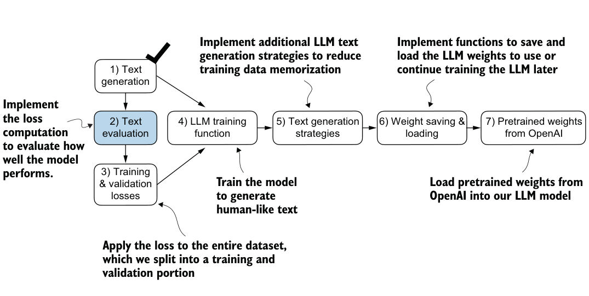
The model produces random text that is different from the target text because it has not been trained yet. We now want to evaluate the performance of the model’s generated text numerically via a loss (figure 5.5). Not only is this useful for measuring the quality of the generated text, but it’s also a building block for implementing the training function, which we will use to update the model’s weight to improve the generated text.
Part of the text evaluation process that we implement, as shown in figure 5.5, is to measure “how far” the generated tokens are from the correct predictions (targets). The training function we implement later will use this information to adjust the model weights to generate text that is more similar to (or, ideally, matches) the target text.
The model training aims to increase the softmax probability in the index positions corresponding to the correct target token IDs, as illustrated in figure 5.6. This softmax probability is also used in the evaluation metric we will implement next to numerically assess the model’s generated outputs: the higher the probability in the correct positions, the better.
Remember that figure 5.6 displays the softmax probabilities for a compact seventoken vocabulary to fit everything into a single figure. This implies that the starting random values will hover around 1/7, which equals approximately 0.14. However, the vocabulary we are using for our GPT-2 model has 50,257 tokens, so most of the initial probabilities will hover around 0.00002 (1/50,257).
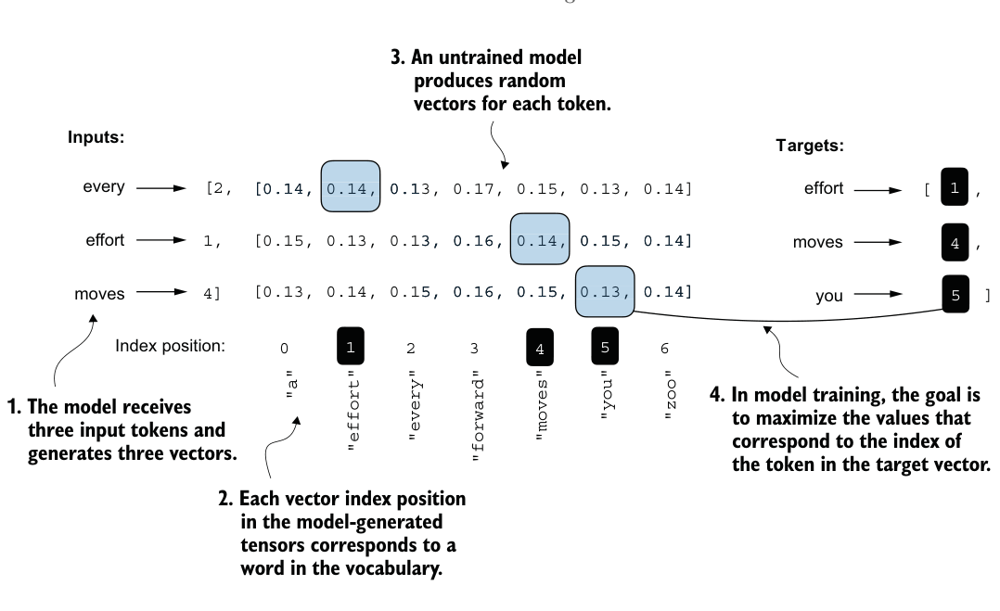
For each of the two input texts, we can print the initial softmax probability scores corresponding to the target tokens using the following code:
text_idx = 0
target_probas_1 = probas[text_idx, [0, 1, 2], targets[text_idx]]
print("Text 1:", target_probas_1)
text_idx = 1
target_probas_2 = probas[text_idx, [0, 1, 2], targets[text_idx]]
print("Text 2:", target_probas_2)The three target token ID probabilities for each batch are
Text 1: tensor([7.4541e-05, 3.1061e-05, 1.1563e-05])
Text 2: tensor([1.0337e-05, 5.6776e-05, 4.7559e-06])The goal of training an LLM is to maximize the likelihood of the correct token, which involves increasing its probability relative to other tokens. This way, we ensure the LLM consistently picks the target token—essentially the next word in the sentence— as the next token it generates.
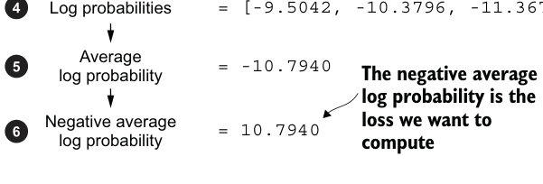
Backpropagation#
How do we maximize the softmax probability values corresponding to the target
tokens? The big picture is that we update the model weights so that the model outputs
higher values for the respective token IDs we want to generate. The weight update is
done via a process called backpropagation, a standard technique for training deep
neural networks (see sections A.3 to A.7 in appendix A for more details about back-
propagation and model training).
Backpropagation requires a loss function, which calculates the difference between
the model’s predicted output (here, the probabilities corresponding to the target
token IDs) and the actual desired output. This loss function measures how far off the
model’s predictions are from the target values.
Next, we will calculate the loss for the probability scores of the two example batches, target_probas_1 and target_probas_2. The main steps are illustrated in figure 5.7. Since we already applied steps 1 to 3 to obtain target_probas_1 and target_ probas_2, we proceed with step 4, applying the logarithm to the probability scores:
log_probas = torch.log(torch.cat((target_probas_1, target_probas_2)))
print(log_probas)= [[[ 0.1113, -0.1057, -0.3666, ..., ]]]
= [[[1.8849e-05, 1.5172e-05, 1.1687e-05, ..., ]]]
= [7.4541e-05, 3.1061e-05, 1.1563e-05, ..., ]= [-9.5042, -10.3796, -11.3677, ..., ]This results in the following values:
tensor([ -9.5042, -10.3796, -11.3677, -11.4798, -9.7764, -12.2561])Working with logarithms of probability scores is more manageable in mathematical optimization than handling the scores directly. This topic is outside the scope of this book, but I’ve detailed it further in a lecture, which can be found in appendix B.
Next, we combine these log probabilities into a single score by computing the average (step 5 in figure 5.7):
avg_log_probas = torch.mean(log_probas)
print(avg_log_probas)The resulting average log probability score is
tensor(-10.7940)The goal is to get the average log probability as close to 0 as possible by updating the model’s weights as part of the training process. However, in deep learning, the common practice isn’t to push the average log probability up to 0 but rather to bring the negative average log probability down to 0. The negative average log probability is simply the average log probability multiplied by –1, which corresponds to step 6 in figure 5.7:
neg_avg_log_probas = avg_log_probas * -1
print(neg_avg_log_probas)This prints tensor(10.7940). In deep learning, the term for turning this negative value, –10.7940, into 10.7940, is known as the cross entropy loss. PyTorch comes in handy here, as it already has a built-in cross_entropy function that takes care of all these six steps in figure 5.7 for us.
Cross entropy loss#
At its core, the cross entropy loss is a popular measure in machine learning and deep
learning that measures the difference between two probability distributions—typi-
cally, the true distribution of labels (here, tokens in a dataset) and the predicted dis-
tribution from a model (for instance, the token probabilities generated by an LLM).
In the context of machine learning and specifically in frameworks like PyTorch, the
cross_entropy function computes this measure for discrete outcomes, which is
similar to the negative average log probability of the target tokens given the model’s
generated token probabilities, making the terms “cross entropy” and “negative aver-
age log probability” related and often used interchangeably in practice.
Before we apply the cross_entropy function, let’s briefly recall the shape of the logits and target tensors:
print("Logits shape:", logits.shape)
print("Targets shape:", targets.shape)The resulting shapes are
Logits shape: torch.Size([2, 3, 50257])
Targets shape: torch.Size([2, 3])As we can see, the logits tensor has three dimensions: batch size, number of tokens, and vocabulary size. The targets tensor has two dimensions: batch size and number of tokens.
For the cross_entropy loss function in PyTorch, we want to flatten these tensors by combining them over the batch dimension:
logits_flat = logits.flatten(0, 1)
targets_flat = targets.flatten()
print("Flattened logits:", logits_flat.shape)
print("Flattened targets:", targets_flat.shape)The resulting tensor dimensions are
Flattened logits: torch.Size([6, 50257])
Flattened targets: torch.Size([6])Remember that the targets are the token IDs we want the LLM to generate, and the logits contain the unscaled model outputs before they enter the softmax function to obtain the probability scores.
Previously, we applied the softmax function, selected the probability scores corresponding to the target IDs, and computed the negative average log probabilities. PyTorch’s cross_entropy function will take care of all these steps for us:
loss = torch.nn.functional.cross_entropy(logits_flat, targets_flat)
print(loss)The resulting loss is the same that we obtained previously when applying the individual steps in figure 5.7 manually:
tensor(10.7940)Perplexity#
Perplexity is a measure often used alongside cross entropy loss to evaluate the per-
formance of models in tasks like language modeling. It can provide a more interpre-
table way to understand the uncertainty of a model in predicting the next token in a
sequence.
Perplexity measures how well the probability distribution predicted by the model
matches the actual distribution of the words in the dataset. Similar to the loss, a lower
perplexity indicates that the model predictions are closer to the actual distribution.
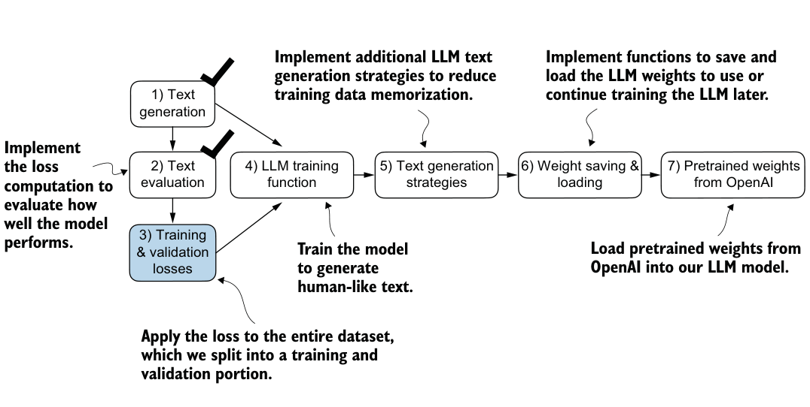
(continued)
Perplexity can be calculated as perplexity = torch.exp(loss), which returns
tensor(48725.8203) when applied to the previously calculated loss.
Perplexity is often considered more interpretable than the raw loss value because it sig-
nifies the effective vocabulary size about which the model is uncertain at each step. In
the given example, this would translate to the model being unsure about which among
48,725 tokens in the vocabulary to generate as the next token.
We have now calculated the loss for two small text inputs for illustration purposes. Next, we will apply the loss computation to the entire training and validation sets.
5.1.3 Calculating the training and validation set losses#
We must first prepare the training and validation datasets that we will use to train the LLM. Then, as highlighted in figure 5.8, we will calculate the cross entropy for the training and validation sets, which is an important component of the model training process.
To compute the loss on the training and validation datasets, we use a very small text dataset, the “The Verdict” short story by Edith Wharton, which we have already worked with in chapter 2. By selecting a text from the public domain, we circumvent any concerns related to usage rights. Additionally, using such a small dataset allows for the execution of code examples on a standard laptop computer in a matter of minutes, even without a high-end GPU, which is particularly advantageous for educational purposes.
The cost of pretraining LLMs #
To put the scale of our project into perspective, consider the training of the 7 billion
parameter Llama 2 model, a relatively popular openly available LLM. This model
required 184,320 GPU hours on expensive A100 GPUs, processing 2 trillion tokens.
At the time of writing, running an 8 × A100 cloud server on AWS costs around $30
per hour. A rough estimate puts the total training cost of such an LLM at around
$690,000 (calculated as 184,320 hours divided by 8, then multiplied by $30).
The following code loads the “The Verdict” short story:
file_path = "the-verdict.txt"
with open(file_path, "r", encoding="utf-8") as file:
text_data = file.read()After loading the dataset, we can check the number of characters and tokens in the dataset:
total_characters = len(text_data)
total_tokens = len(tokenizer.encode(text_data))
print("Characters:", total_characters)
print("Tokens:", total_tokens)The output is
Characters: 20479
Tokens: 5145With just 5,145 tokens, the text might seem too small to train an LLM, but as mentioned earlier, it’s for educational purposes so that we can run the code in minutes instead of weeks. Plus, later we will load pretrained weights from OpenAI into our
GPTModel code.
Next, we divide the dataset into a training and a validation set and use the data loaders from chapter 2 to prepare the batches for LLM training. This process is visualized in figure 5.9. Due to spatial constraints, we use a max_length=6. However, for the actual data loaders, we set the max_length equal to the 256-token context length that the LLM supports so that the LLM sees longer texts during training.
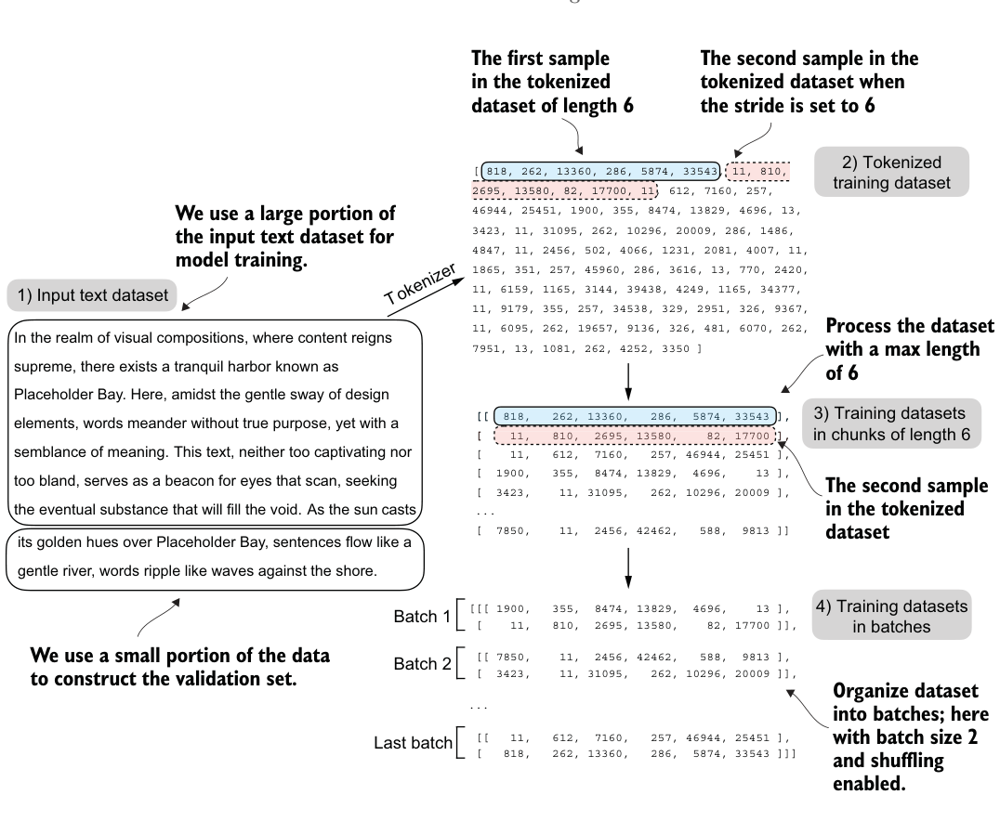
To implement the data splitting and loading, we first define a train_ratio to use 90% of the data for training and the remaining 10% as validation data for model evaluation during training:
train_ratio = 0.90
split_idx = int(train_ratio * len(text_data))
train_data = text_data[:split_idx]
val_data = text_data[split_idx:]Using the train_data and val_data subsets, we can now create the respective data loader reusing the create_dataloader_v1 code from chapter 2:
from chapter02 import create_dataloader_v1
torch.manual_seed(123)
train_loader = create_dataloader_v1(
train_data,
batch_size=2,
max_length=GPT_CONFIG_124M["context_length"],
stride=GPT_CONFIG_124M["context_length"],
drop_last=True,
shuffle=True,
num_workers=0
)
val_loader = create_dataloader_v1(
val_data,
batch_size=2,
max_length=GPT_CONFIG_124M["context_length"],
stride=GPT_CONFIG_124M["context_length"],
drop_last=False,
shuffle=False,
num_workers=0
)We used a relatively small batch size to reduce the computational resource demand because we were working with a very small dataset. In practice, training LLMs with batch sizes of 1,024 or larger is not uncommon.
As an optional check, we can iterate through the data loaders to ensure that they were created correctly:
print("Train loader:")
for x, y in train_loader:
print(x.shape, y.shape)
print("\nValidation loader:")
for x, y in val_loader:
print(x.shape, y.shape)We should see the following outputs:
Train loader:
torch.Size([2, 256]) torch.Size([2, 256])
torch.Size([2, 256]) torch.Size([2, 256])
torch.Size([2, 256]) torch.Size([2, 256])
torch.Size([2, 256]) torch.Size([2, 256])
torch.Size([2, 256]) torch.Size([2, 256])
torch.Size([2, 256]) torch.Size([2, 256])
torch.Size([2, 256]) torch.Size([2, 256])
torch.Size([2, 256]) torch.Size([2, 256])
torch.Size([2, 256]) torch.Size([2, 256])Listing 5.2Function to compute the training and validation loss
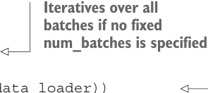
Validation loader:
torch.Size([2, 256]) torch.Size([2, 256])Based on the preceding code output, we have nine training set batches with two samples and 256 tokens each. Since we allocated only 10% of the data for validation, there is only one validation batch consisting of two input examples. As expected, the input data (x) and target data (y) have the same shape (the batch size times the number of tokens in each batch) since the targets are the inputs shifted by one position, as discussed in chapter 2.
Next, we implement a utility function to calculate the cross entropy loss of a given batch returned via the training and validation loader:
代码旁注 1 条
- The transfer to a given device allows us to transfer the data to a GPU.
def calc_loss_batch(input_batch, target_batch, model, device):
input_batch = input_batch.to(device)
target_batch = target_batch.to(device)
logits = model(input_batch)
loss = torch.nn.functional.cross_entropy(
logits.flatten(0, 1), target_batch.flatten()
)
return lossWe can now use this calc_loss_batch utility function, which computes the loss for a single batch, to implement the following calc_loss_loader function that computes the loss over all the batches sampled by a given data loader.
def calc_loss_loader(data_loader, model, device, num_batches=None):
total_loss = 0.
if len(data_loader) == 0:代码旁注 2 条
- Iteratives over all batches if no fixed num_batches is specified
- Reduces the number of batches to match the total number of batches in the data
return float("nan")
elif num_batches is None:
num_batches = len(data_loader)
else:
num_batches = min(num_batches, len(data_loader))
for i, (input_batch, target_batch) in enumerate(data_loader):
if i < num_batches:
loss = calc_loss_batch(
input_batch, target_batch, model, device
)
total_loss += loss.item()代码旁注 4 条
- Sums loss loader if num_batches
- for each exceeds the number
- batch of batches in the data loader
- Averages the loss over all batches
else:
break
return total_loss / num_batchesBy default, the calc_loss_loader function iterates over all batches in a given data loader, accumulates the loss in the total_loss variable, and then computes and
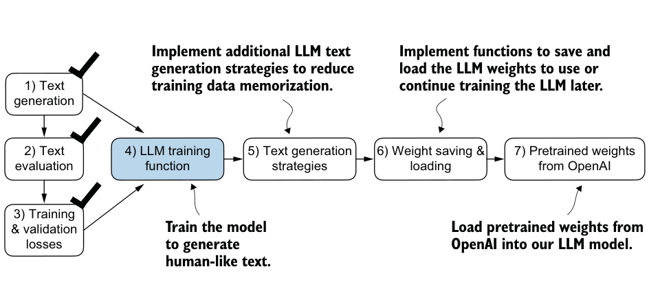
averages the loss over the total number of batches. Alternatively, we can specify a smaller number of batches via num_batches to speed up the evaluation during model training.
Let’s now see this calc_loss_loader function in action, applying it to the training and validation set loaders:
代码旁注 5 条
- If you have a machine with a CUDA-supported GPU, the LLM Disables gradient tracking
- will train on the GPU without for efficiency because we
- making any changes to the code. are not training yet
- we ensure the data is loaded ontoVia the “device” setting,
- the same device as the LLM model.
device = torch.device("cuda" if torch.cuda.is_available() else "cpu")
model.to(device)
with torch.no_grad():
train_loss = calc_loss_loader(train_loader, model, device)
val_loss = calc_loss_loader(val_loader, model, device)
print("Training loss:", train_loss)
print("Validation loss:", val_loss)The resulting loss values are
Training loss: 10.98758347829183
Validation loss: 10.98110580444336The loss values are relatively high because the model has not yet been trained. For comparison, the loss approaches 0 if the model learns to generate the next tokens as they appear in the training and validation sets.
Now that we have a way to measure the quality of the generated text, we will train the LLM to reduce this loss so that it becomes better at generating text, as illustrated in figure 5.10.
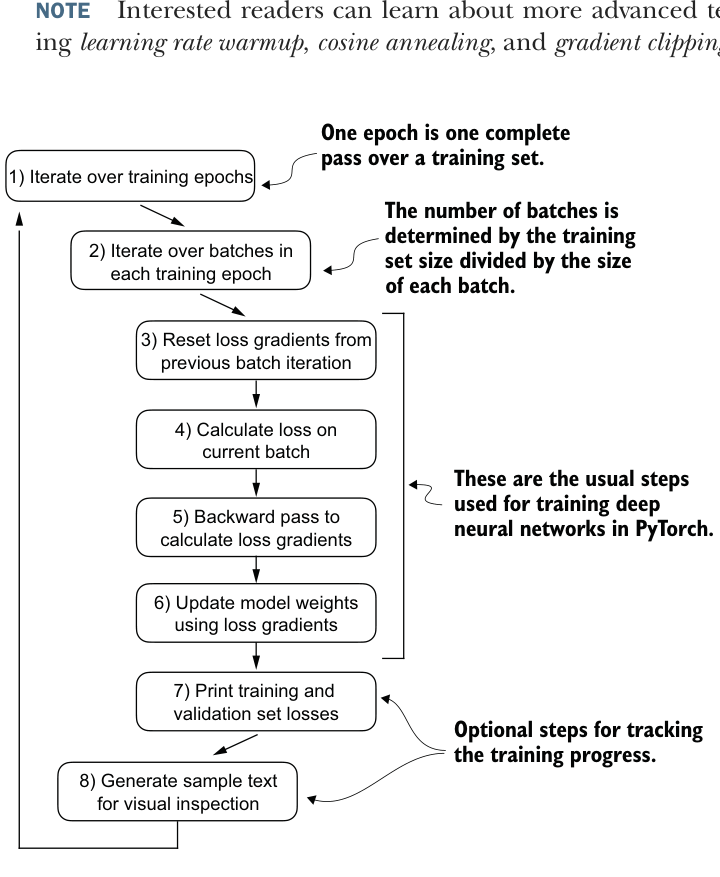
Next, we will focus on pretraining the LLM. After model training, we will implement alternative text generation strategies and save and load pretrained model weights.
5.2 Training an LLM#
It is finally time to implement the code for pretraining the LLM, our GPTModel. For this, we focus on a straightforward training loop to keep the code concise and readable.
ing learning rate warmup, cosine annealing, and gradient clipping, in appendix D.
Figure 5.11 A typical training loop for training deep neural networks in PyTorch consists of numerous steps, iterating over the batches in the training set for several epochs. In each loop, we calculate the loss for each training set batch to determine loss gradients, which we use to update the model weights so that the training set loss is minimized.
The flowchart in figure 5.11 depicts a typical PyTorch neural network training workflow, which we use for training an LLM. It outlines eight steps, starting with iterating over each epoch, processing batches, resetting gradients, calculating the loss and new
Listing 5.3The main function for pretraining LLMs
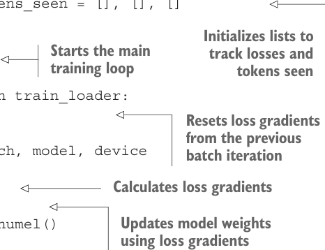
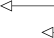
gradients, and updating weights and concluding with monitoring steps like printing losses and generating text samples.
We can implement this training flow via the train_model_simple function in code.
def train_model_simple(model, train_loader, val_loader,
optimizer, device, num_epochs,
eval_freq, eval_iter, start_context, tokenizer):
train_losses, val_losses, track_tokens_seen = [], [], []代码旁注 5 条
- Initializes lists to
- Starts the main track losses and
- training loop tokens seen
- Resets loss gradients from the previous batch iteration
- Calculates loss gradients
tokens_seen, global_step = 0, -1
for epoch in range(num_epochs):
model.train()
for input_batch, target_batch in train_loader:
optimizer.zero_grad()
loss = calc_loss_batch(
input_batch, target_batch, model, device
)
loss.backward()代码旁注 2 条
- Updates model weights using loss gradients
- Prints a sample text
optimizer.step()
tokens_seen += input_batch.numel()
global_step += 1
if global_step % eval_freq == 0: train_loss, val_loss = evaluate_model( Optional evaluation step
model, train_loader, val_loader, device, eval_iter)
train_losses.append(train_loss)
val_losses.append(val_loss)
track_tokens_seen.append(tokens_seen)
print(f"Ep {epoch+1} (Step {global_step:06d}): "
f"Train loss {train_loss:.3f}, "
f"Val loss {val_loss:.3f}"
)
generate_and_print_sample( after each epoch
model, tokenizer, device, start_context
)
return train_losses, val_losses, track_tokens_seenNote that the train_model_simple function we just created uses two functions we
have not defined yet: evaluate_model and generate_and_print_sample.
The evaluate_model function corresponds to step 7 in figure 5.11. It prints the training and validation set losses after each model update so we can evaluate whether the training improves the model. More specifically, the evaluate_model function calculates the loss over the training and validation set while ensuring the model is in eval-
over the training and validation sets:
代码旁注 4 条
- Disables gradient tracking, which is not
- Dropout is disabled during required during evaluation, to reduce
- evaluation for stable, the computational overhead
- reproducible results.
def evaluate_model(model, train_loader, val_loader, device, eval_iter):
model.eval()
with torch.no_grad():
train_loss = calc_loss_loader(
train_loader, model, device, num_batches=eval_iter
)
val_loss = calc_loss_loader(
val_loader, model, device, num_batches=eval_iter
)
model.train()
return train_loss, val_lossSimilar to evaluate_model, the generate_and_print_sample function is a convenience function that we use to track whether the model improves during the training. In particular, the generate_and_print_sample function takes a text snippet (start_context) as input, converts it into token IDs, and feeds it to the LLM to generate a text sample using the generate_text_simple function we used earlier:
代码旁注 1 条
- Compact print format
def generate_and_print_sample(model, tokenizer, device, start_context):
model.eval()
context_size = model.pos_emb.weight.shape[0]
encoded = text_to_token_ids(start_context, tokenizer).to(device)
with torch.no_grad():
token_ids = generate_text_simple(
model=model, idx=encoded,
max_new_tokens=50, context_size=context_size
)
decoded_text = token_ids_to_text(token_ids, tokenizer)
print(decoded_text.replace("\n", " "))
model.train()While the evaluate_model function gives us a numeric estimate of the model’s training progress, this generate_and_print_sample text function provides a concrete text example generated by the model to judge its capabilities during training.
AdamW #
Adam optimizers are a popular choice for training deep neural networks. However, in
our training loop, we opt for the AdamW optimizer. AdamW is a variant of Adam that
improves the weight decay approach, which aims to minimize model complexity and
prevent overfitting by penalizing larger weights. This adjustment allows AdamW to
achieve more effective regularization and better generalization; thus, AdamW is fre-
quently used in the training of LLMs.
Let’s see this all in action by training a GPTModel instance for 10 epochs using an AdamW optimizer and the train_model_simple function we defined earlier:
代码旁注 1 条
- The .parameters() method returns all trainable weight parameters of the model.
torch.manual_seed(123)
model = GPTModel(GPT_CONFIG_124M)
model.to(device)
optimizer = torch.optim.AdamW(
model.parameters(),
lr=0.0004, weight_decay=0.1
)
num_epochs = 10
train_losses, val_losses, tokens_seen = train_model_simple(
model, train_loader, val_loader, optimizer, device,
num_epochs=num_epochs, eval_freq=5, eval_iter=5,
start_context="Every effort moves you", tokenizer=tokenizer
)Executing the train_model_simple function starts the training process, which takes about 5 minutes to complete on a MacBook Air or a similar laptop. The output printed during this execution is as follows:
代码旁注 2 条
- Intermediate
- results removed to save space
Ep 1 (Step 000000): Train loss 9.781, Val loss 9.933
Ep 1 (Step 000005): Train loss 8.111, Val loss 8.339
Every effort moves you,,,,,,,,,,,,.
Ep 2 (Step 000010): Train loss 6.661, Val loss 7.048
Ep 2 (Step 000015): Train loss 5.961, Val loss 6.616
Every effort moves you, and, and, and, and, and, and, and, and, and, and,
and, and, and, and, and, and, and, and, and, and, and, and,, and, and,
[...]
Ep 9 (Step 000080): Train loss 0.541, Val loss 6.393
Every effort moves you?" "Yes--quite insensible to the irony. She wanted
him vindicated--and by me!" He laughed again, and threw back the
window-curtains, I had the donkey. "There were days when I
Ep 10 (Step 000085): Train loss 0.391, Val loss 6.452
Every effort moves you know," was one of the axioms he laid down across the
Sevres and silver of an exquisitely appointed luncheon-table, when, on a
later day, I had again run over from Monte Carlo; and Mrs. GisAs we can see, the training loss improves drastically, starting with a value of 9.781 and converging to 0.391. The language skills of the model have improved quite a lot. In the beginning, the model is only able to append commas to the start context (Every effort moves you,,,,,,,,,,,,) or repeat the word and. At the end of the training, it can generate grammatically correct text.
Similar to the training set loss, we can see that the validation loss starts high (9.933) and decreases during the training. However, it never becomes as small as the training set loss and remains at 6.452 after the 10th epoch.
Before discussing the validation loss in more detail, let’s create a simple plot that shows the training and validation set losses side by side:
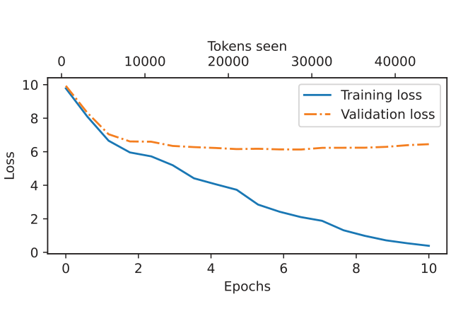
代码旁注 2 条
- Creates a second x-axis that shares the same y-axis
- Invisible plot for aligning ticks
import matplotlib.pyplot as plt
from matplotlib.ticker import MaxNLocator
def plot_losses(epochs_seen, tokens_seen, train_losses, val_losses):
fig, ax1 = plt.subplots(figsize=(5, 3))
ax1.plot(epochs_seen, train_losses, label="Training loss")
ax1.plot(
epochs_seen, val_losses, linestyle="-.", label="Validation loss"
)
ax1.set_xlabel("Epochs")
ax1.set_ylabel("Loss")
ax1.legend(loc="upper right")
ax1.xaxis.set_major_locator(MaxNLocator(integer=True))
ax2 = ax1.twiny()
ax2.plot(tokens_seen, train_losses, alpha=0)
ax2.set_xlabel("Tokens seen")
fig.tight_layout()
plt.show()
epochs_tensor = torch.linspace(0, num_epochs, len(train_losses))
plot_losses(epochs_tensor, tokens_seen, train_losses, val_losses)The resulting training and validation loss plot is shown in figure 5.12. As we can see, both the training and validation losses start to improve for the first epoch. However, the losses start to diverge past the second epoch. This divergence and the fact that the validation loss is much larger than the training loss indicate that the model is overfitting to the training data. We can confirm that the model memorizes the training data verbatim by searching for the generated text snippets, such as quite insensible to the irony in the “The Verdict” text file.
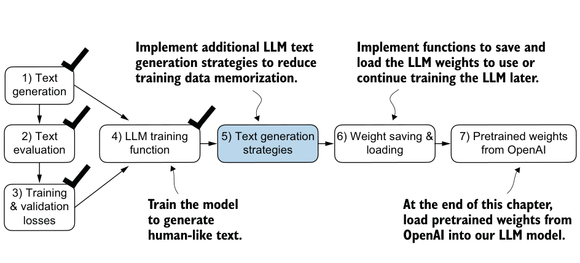
This memorization is expected since we are working with a very, very small training dataset and training the model for multiple epochs. Usually, it’s common to train a model on a much larger dataset for only one epoch.
As illustrated in figure 5.13, we have completed four of our objectives for this chaper. Next, we will cover text generation strategies for LLMs to reduce training data memorization and increase the originality of the LLM-generated text before we cover weight loading and saving and loading pretrained weights from OpenAI’s GPT model.
5.3 Decoding strategies to control randomness#
Let’s look at text generation strategies (also called decoding strategies) to generate more original text. First, we will briefly revisit the generate_text_simple function that we used inside generate_and_print_sample earlier. Then we will cover two techniques, temperature scaling and top-k sampling, to improve this function.
We begin by transferring the model back from the GPU to the CPU since inference with a relatively small model does not require a GPU. Also, after training, we put the model into evaluation mode to turn off random components such as dropout:
model.to("cpu")
model.eval()Next, we plug the GPTModel instance (model) into the generate_text_simple function, which uses the LLM to generate one token at a time:
tokenizer = tiktoken.get_encoding("gpt2")
token_ids = generate_text_simple(
model=model,
idx=text_to_token_ids("Every effort moves you", tokenizer),
max_new_tokens=25,
context_size=GPT_CONFIG_124M["context_length"]
)
print("Output text:\n", token_ids_to_text(token_ids, tokenizer))The generated text is
Output text:
Every effort moves you know," was one of the axioms he laid down across the
Sevres and silver of an exquisitely appointed lunAs explained earlier, the generated token is selected at each generation step corresponding to the largest probability score among all tokens in the vocabulary. This means that the LLM will always generate the same outputs even if we run the preceding generate_text_simple function multiple times on the same start context (Every
effort moves you).5.3.1 Temperature scaling#
Let’s now look at temperature scaling, a technique that adds a probabilistic selection process to the next-token generation task. Previously, inside the generate_text_simple function, we always sampled the token with the highest probability as the next token using torch.argmax, also known as greedy decoding. To generate text with more variety, we can replace argmax with a function that samples from a probability distribution (here, the probability scores the LLM generates for each vocabulary entry at each token generation step).
To illustrate the probabilistic sampling with a concrete example, let’s briefly discuss the next-token generation process using a very small vocabulary for illustration purposes:
vocab = {
"closer": 0,
"every": 1,
"effort": 2,
"forward": 3,
"inches": 4,
"moves": 5,
"pizza": 6,
"toward": 7,
"you": 8,
}
inverse_vocab = {v: k for k, v in vocab.items()}Next, assume the LLM is given the start context "every effort moves you" and generates the following next-token logits:
next_token_logits = torch.tensor(
[4.51, 0.89, -1.90, 6.75, 1.63, -1.62, -1.89, 6.28, 1.79]
)As discussed in chapter 4, inside generate_text_simple, we convert the logits into probabilities via the softmax function and obtain the token ID corresponding to the generated token via the argmax function, which we can then map back into text via the inverse vocabulary:
probas = torch.softmax(next_token_logits, dim=0)
next_token_id = torch.argmax(probas).item()
print(inverse_vocab[next_token_id])Since the largest logit value and, correspondingly, the largest softmax probability score are in the fourth position (index position 3 since Python uses 0 indexing), the generated word is "forward".
To implement a probabilistic sampling process, we can now replace argmax with the multinomial function in PyTorch:
torch.manual_seed(123)
next_token_id = torch.multinomial(probas, num_samples=1).item()
print(inverse_vocab[next_token_id])The printed output is "forward" just like before. What happened? The multinomial function samples the next token proportional to its probability score. In other words, "forward" is still the most likely token and will be selected by multinomial most of the time but not all the time. To illustrate this, let’s implement a function that repeats this sampling 1,000 times:
def print_sampled_tokens(probas):
torch.manual_seed(123)
sample = [torch.multinomial(probas, num_samples=1).item()
for i in range(1_000)]
sampled_ids = torch.bincount(torch.tensor(sample))
for i, freq in enumerate(sampled_ids):
print(f"{freq} x {inverse_vocab[i]}")
print_sampled_tokens(probas)The sampling output is
73 x closer
0 x every
0 x effort
582 x forward
2 x inches
0 x moves
0 x pizza
343 x towardAs we can see, the word forward is sampled most of the time (582 out of 1,000 times), but other tokens such as closer, inches, and toward will also be sampled some of the time. This means that if we replaced the argmax function with the multinomial function inside the generate_and_print_sample function, the LLM would some-
times generate texts such as every effort moves you toward, every effort moves
you inches, and every effort moves you closer instead of every effort moves you
forward.We can further control the distribution and selection process via a concept called temperature scaling. Temperature scaling is just a fancy description for dividing the logits by a number greater than 0:
def softmax_with_temperature(logits, temperature):
scaled_logits = logits / temperature
return torch.softmax(scaled_logits, dim=0)Temperatures greater than 1 result in more uniformly distributed token probabilities, and temperatures smaller than 1 will result in more confident (sharper or more peaky) distributions. Let’s illustrate this by plotting the original probabilities alongside probabilities scaled with different temperature values:
代码旁注 1 条
- Original, lower, and higher confidence
temperatures = [1, 0.1, 5]
scaled_probas = [softmax_with_temperature(next_token_logits, T)
for T in temperatures]
x = torch.arange(len(vocab))
bar_width = 0.15
fig, ax = plt.subplots(figsize=(5, 3))
for i, T in enumerate(temperatures):
rects = ax.bar(x + i * bar_width, scaled_probas[i],
bar_width, label=f'Temperature = {T}')
ax.set_ylabel('Probability')
ax.set_xticks(x)
ax.set_xticklabels(vocab.keys(), rotation=90)
ax.legend()
plt.tight_layout()
plt.show()The resulting plot is shown in figure 5.14.
A temperature of 1 divides the logits by 1 before passing them to the softmax function to compute the probability scores. In other words, using a temperature of 1 is the same as not using any temperature scaling. In this case, the tokens are selected with a probability equal to the original softmax probability scores via the multinomial sampling function in PyTorch. For example, for the temperature setting 1, the token corresponding to “forward” would be selected about 60% of the time, as we can see in figure 5.14.
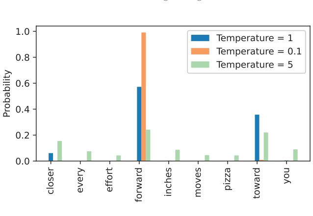
Also, as we can see in figure 5.14, applying very small temperatures, such as 0.1, will result in sharper distributions such that the behavior of the multinomial function selects the most likely token (here, "forward") almost 100% of the time, approaching the behavior of the argmax function. Likewise, a temperature of 5 results in a more uniform distribution where other tokens are selected more often. This can add more variety to the generated texts but also more often results in nonsensical text. For example, using the temperature of 5 results in texts such as every effort moves you pizza about 4% of the time.
Exercise 5.1#
Use the print_sampled_tokens function to print the sampling frequencies of the
softmax probabilities scaled with the temperatures shown in figure 5.14. How often
is the word pizza sampled in each case? Can you think of a faster and more accurate
way to determine how often the word pizza is sampled?
5.3.2 Top-k sampling#
We’ve now implemented a probabilistic sampling approach coupled with temperature scaling to increase the diversity of the outputs. We saw that higher temperature values result in more uniformly distributed next-token probabilities, which result in more diverse outputs as it reduces the likelihood of the model repeatedly selecting the most probable token. This method allows for the exploring of less likely but potentially more interesting and creative paths in the generation process. However, one downside of this approach is that it sometimes leads to grammatically incorrect or completely nonsensical outputs such as every effort moves you pizza.
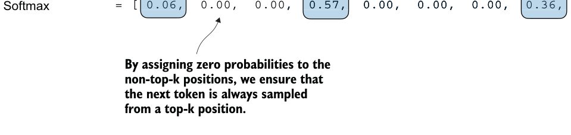
Top-k sampling, when combined with probabilistic sampling and temperature scaling, can improve the text generation results. In top-k sampling, we can restrict the sampled tokens to the top-k most likely tokens and exclude all other tokens from the selection process by masking their probability scores, as illustrated in figure 5.15.
"forward""inches"
"closer"
"effort"
"toward"
"every"
"moves"
"pizza"
"you"Vocabulary:
0 1 2 3 4 5 6 7 8Index position:
= [ 4.51, 0.89, -1.90, 6.75, 1.63, -1.62, -1.89, 6.28, 1.79 ]Logits
= [ 4.51, 0.89, -1.90, 6.75, 1.63, -1.62, -1.89, 6.28, 1.79 ]4.51,, 6.75, 1.63, -1.62, -1.89, 6.28, 1.79 ], 6.75, 1.63, -1.62, -1.89, 6.28, 1.79 ]Top-k (k = 3)
-inf mask
= [ 4.51, -inf, -inf, 6.75, -inf, -inf, -inf, 6.28, -inf ]4.51,6.75, -inf, -inf, -inf, 6.28, -inf ]6.75, -inf, -inf, -inf, 6.28, -inf ]= [ 0.06, 0.00, 0.00, 0.57, 0.00, 0.00, 0.00, 0.36, 0.00 ]0.06,, 0.57, 0.00, 0.00, 0.00, 0.36, 0.00 ], 0.57, 0.00, 0.00, 0.00, 0.36, 0.00 ]Figure 5.15 Using top-k sampling with k = 3, we focus on the three tokens associated with the highest logits and mask out all other tokens with negative infinity (–inf) before applying the softmax function. This results in a probability distribution with a probability value 0 assigned to all non-top-k tokens. (The numbers in this figure are truncated to two digits after the decimal point to reduce visual clutter. The values in the “Softmax” row should add up to 1.0.)
The top-k approach replaces all nonselected logits with negative infinity value (-inf), such that when computing the softmax values, the probability scores of the non-top-k tokens are 0, and the remaining probabilities sum up to 1. (Careful readers may remember this masking trick from the causal attention module we implemented in chapter 3, section 3.5.1.)
In code, we can implement the top-k procedure in figure 5.15 as follows, starting with the selection of the tokens with the largest logit values:
top_k = 3
top_logits, top_pos = torch.topk(next_token_logits, top_k)
print("Top logits:", top_logits)
print("Top positions:", top_pos)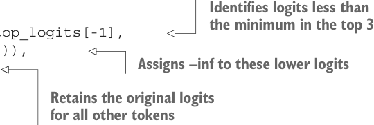
Listing 5.4A modified text generation function with more diversity
The logits values and token IDs of the top three tokens, in descending order, are
Top logits: tensor([6.7500, 6.2800, 4.5100])
Top positions: tensor([3, 7, 0])Subsequently, we apply PyTorch’s where function to set the logit values of tokens that are below the lowest logit value within our top-three selection to negative infinity (-inf):
代码旁注 3 条
- Identifies logits less than the minimum in the top 3
- Assigns –inf to these lower logits
- Retains the original logits for all other tokens
new_logits = torch.where(
condition=next_token_logits < top_logits[-1],
input=torch.tensor(float('-inf')),
other=next_token_logits
)
print(new_logits)The resulting logits for the next token in the nine-token vocabulary are
tensor([4.5100, -inf, -inf, 6.7500, -inf, -inf, -inf, 6.2800,
-inf])Lastly, let’s apply the softmax function to turn these into next-token probabilities:
topk_probas = torch.softmax(new_logits, dim=0)
print(topk_probas)As we can see, the result of this top-three approach are three non-zero probability scores:
tensor([0.0615, 0.0000, 0.0000, 0.5775, 0.0000, 0.0000, 0.0000, 0.3610,
0.0000])We can now apply the temperature scaling and multinomial function for probabilistic sampling to select the next token among these three non-zero probability scores to generate the next token. We do this next by modifying the text generation function.
5.3.3 Modifying the text generation function#
Now, let’s combine temperature sampling and top-k sampling to modify the generate_ text_simple function we used to generate text via the LLM earlier, creating a new generate function.
代码旁注 1 条
- The for loop is the same as before: gets logits and only focuses on the last time step.
def generate(model, idx, max_new_tokens, context_size,
temperature=0.0, top_k=None, eos_id=None):
for _ in range(max_new_tokens):
idx_cond = idx[:, -context_size:]
with torch.no_grad():
logits = model(idx_cond)
logits = logits[:, -1, :]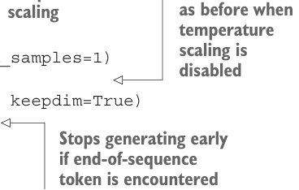
代码旁注 3 条
- Filters logits with top_k sampling
- Carries out greedy next-
- Applies token selection
if top_k is not None:
top_logits, _ = torch.topk(logits, top_k)
min_val = top_logits[:, -1]
logits = torch.where(
logits < min_val,
torch.tensor(float('-inf')).to(logits.device),
logits
)
if temperature > 0.0:代码旁注 3 条
- temperature as before when
- scaling temperature scaling is disabled
- Stops generating early if end-of-sequence token is encountered
logits = logits / temperature
probs = torch.softmax(logits, dim=-1)
idx_next = torch.multinomial(probs, num_samples=1)
else:
idx_next = torch.argmax(logits, dim=-1, keepdim=True)
if idx_next == eos_id:
break
idx = torch.cat((idx, idx_next), dim=1)
return idxLet’s now see this new generate function in action:
torch.manual_seed(123)
token_ids = generate(
model=model,
idx=text_to_token_ids("Every effort moves you", tokenizer),
max_new_tokens=15,
context_size=GPT_CONFIG_124M["context_length"],
top_k=25,
temperature=1.4
)
print("Output text:\n", token_ids_to_text(token_ids, tokenizer))The generated text is
Output text:
Every effort moves you stand to work on surprise, a one of us had gone
with random-As we can see, the generated text is very different from the one we previously gener-
ated via the generate_simple function in section 5.3 ("Every effort moves you know," was one of the axioms he laid...! ), which was a memorized passage from the training set.
Exercise 5.2#
Play around with different temperatures and top-k settings. Based on your observa-
tions, can you think of applications where lower temperature and top-k settings are
desired? Likewise, can you think of applications where higher temperature and top-k
settings are preferred? (It’s recommended to also revisit this exercise at the end of
the chapter after loading the pretrained weights from OpenAI.)
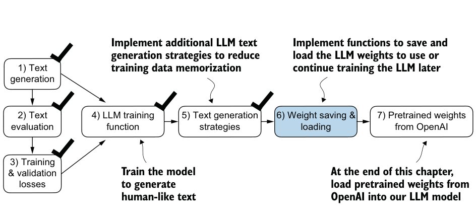
Exercise 5.3#
What are the different combinations of settings for the generate function to force
deterministic behavior, that is, disabling the random sampling such that it always pro-
duces the same outputs similar to the generate_simple function?
5.4 Loading and saving model weights in PyTorch#
Thus far, we have discussed how to numerically evaluate the training progress and pretrain an LLM from scratch. Even though both the LLM and dataset were relatively small, this exercise showed that pretraining LLMs is computationally expensive. Thus, it is important to be able to save the LLM so that we don’t have to rerun the training every time we want to use it in a new session.
So, let’s discuss how to save and load a pretrained model, as highlighted in figure 5.16. Later, we will load a more capable pretrained GPT model from OpenAI into our GPTModel instance.
Fortunately, saving a PyTorch model is relatively straightforward. The recommended way is to save a model’s state_dict, a dictionary mapping each layer to its parameters, using the torch.save function:
torch.save(model.state_dict(), "model.pth")"model.pth" is the filename where the state_dict is saved. The .pth extension is a convention for PyTorch files, though we could technically use any file extension.
Then, after saving the model weights via the state_dict, we can load the model weights into a new GPTModel model instance:
model = GPTModel(GPT_CONFIG_124M)
model.load_state_dict(torch.load("model.pth", map_location=device))
model.eval()As discussed in chapter 4, dropout helps prevent the model from overfitting to the training data by randomly “dropping out” of a layer’s neurons during training. However, during inference, we don’t want to randomly drop out any of the information the network has learned. Using model.eval() switches the model to evaluation mode for inference, disabling the dropout layers of the model. If we plan to continue pretraining a model later—for example, using the train_model_simple function we defined earlier in this chapter—saving the optimizer state is also recommended.
Adaptive optimizers such as AdamW store additional parameters for each model weight. AdamW uses historical data to adjust learning rates for each model parameter dynamically. Without it, the optimizer resets, and the model may learn suboptimally or even fail to converge properly, which means it will lose the ability to generate coherent text. Using torch.save, we can save both the model and optimizer state_dict contents:
torch.save({
"model_state_dict": model.state_dict(),
"optimizer_state_dict": optimizer.state_dict(),
},
"model_and_optimizer.pth"
)Then we can restore the model and optimizer states by first loading the saved data via
torch.load and then using the load_state_dict method:
checkpoint = torch.load("model_and_optimizer.pth", map_location=device)
model = GPTModel(GPT_CONFIG_124M)
model.load_state_dict(checkpoint["model_state_dict"])
optimizer = torch.optim.AdamW(model.parameters(), lr=5e-4, weight_decay=0.1)
optimizer.load_state_dict(checkpoint["optimizer_state_dict"])
model.train();Exercise 5.4#
After saving the weights, load the model and optimizer in a new Python session or
Jupyter notebook file and continue pretraining it for one more epoch using the
train_model_simple function.5.5 Loading pretrained weights from OpenAI#
Previously, we trained a small GPT-2 model using a limited dataset comprising a shortstory book. This approach allowed us to focus on the fundamentals without the need for extensive time and computational resources.
Fortunately, OpenAI openly shared the weights of their GPT-2 models, thus eliminating the need to invest tens to hundreds of thousands of dollars in retraining the model on a large corpus ourselves. So, let’s load these weights into our GPTModel class and use the model for text generation. Here, weights refer to the weight parameters stored in the .weight attributes of PyTorch’s Linear and Embedding layers, for example. We accessed them earlier via model.parameters() when training the model. In chapter 6, will reuse these pretrained weights to fine-tune the model for a text classification task and follow instructions similar to ChatGPT.
Note that OpenAI originally saved the GPT-2 weights via TensorFlow, which we have to install to load the weights in Python. The following code will use a progress bar tool called tqdm to track the download process, which we also have to install.
You can install these libraries by executing the following command in your terminal:
pip install tensorflow>=2.15.0 tqdm>=4.66The download code is relatively long, mostly boilerplate, and not very interesting. Hence, instead of devoting precious space to discussing Python code for fetching files from the internet, we download the gpt_download.py Python module directly from this chapter’s online repository:
import urllib.request
url = (
"https://raw.githubusercontent.com/rasbt/"
"LLMs-from-scratch/main/ch05/"
"01_main-chapter-code/gpt_download.py"
)
filename = url.split('/')[-1]
urllib.request.urlretrieve(url, filename)Next, after downloading this file to the local directory of your Python session, you should briefly inspect the contents of this file to ensure that it was saved correctly and contains valid Python code.
We can now import the download_and_load_gpt2 function from the gpt_download .py file as follows, which will load the GPT-2 architecture settings (settings) and weight parameters (params) into our Python session:
from gpt_download import download_and_load_gpt2
settings, params = download_and_load_gpt2(
model_size="124M", models_dir="gpt2"
)Executing this code downloads the following seven files associated with the 124M parameter GPT-2 model:
checkpoint: 100%|███████████████████████████| 77.0/77.0 [00:00<00:00,
63.9kiB/s]
encoder.json: 100%|█████████████████████████| 1.04M/1.04M [00:00<00:00,
2.20MiB/s]
hprams.json: 100%|██████████████████████████| 90.0/90.0 [00:00<00:00,
78.3kiB/s]
model.ckpt.data-00000-of-00001: 100%|███████| 498M/498M [01:09<00:00,
7.16MiB/s]
model.ckpt.index: 100%|█████████████████████| 5.21k/5.21k [00:00<00:00,
3.24MiB/s]
model.ckpt.meta: 100%|██████████████████████| 471k/471k [00:00<00:00,
2.46MiB/s]
vocab.bpe: 100%|████████████████████████████| 456k/456k [00:00<00:00,
1.70MiB/s]Assuming the execution of the previous code has completed, let’s inspect the contents
of settings and params:
print("Settings:", settings)
print("Parameter dictionary keys:", params.keys())The contents are
Settings: {'n_vocab': 50257, 'n_ctx': 1024, 'n_embd': 768, 'n_head': 12,
'n_layer': 12}
Parameter dictionary keys: dict_keys(['blocks', 'b', 'g', 'wpe', 'wte'])Both settings and params are Python dictionaries. The settings dictionary stores the LLM architecture settings similarly to our manually defined GPT_CONFIG_124M settings. The params dictionary contains the actual weight tensors. Note that we only printed the dictionary keys because printing the weight contents would take up too much screen space; however, we can inspect these weight tensors by printing the whole dictionary via print(params) or by selecting individual tensors via the respective dictionary keys, for example, the embedding layer weights:
print(params["wte"])
print("Token embedding weight tensor dimensions:", params["wte"].shape)The weights of the token embedding layer are
[[-0.11010301 ... -0.1363697 0.01506208 0.04531523]
[ 0.04034033 ... 0.08605453 0.00253983 0.04318958]
[-0.12746179 ... 0.08991534 -0.12972379 -0.08785918]
...
[-0.04453601 ... 0.10435229 0.09783269 -0.06952604]
[ 0.1860082 ... -0.09625227 0.07847701 -0.02245961]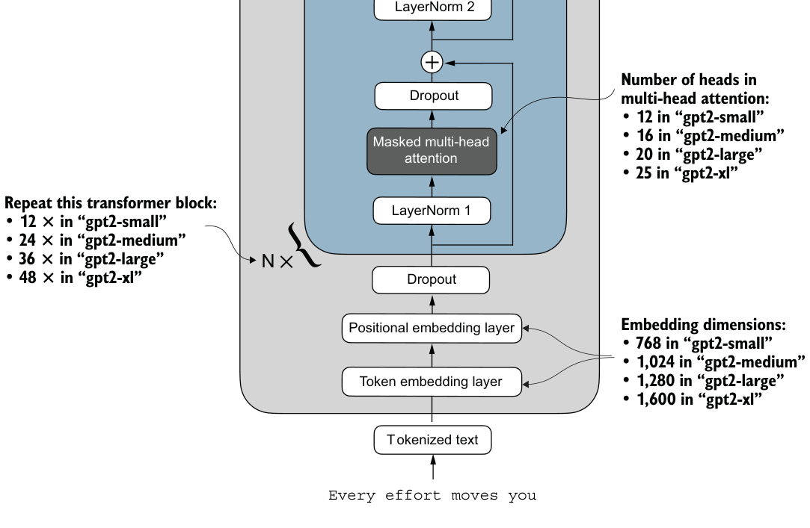
[ 0.05135201 ... 0.00704835 0.15519823 0.12067825]]
Token embedding weight tensor dimensions: (50257, 768)We downloaded and loaded the weights of the smallest GPT-2 model via the download_ and_load_gpt2(model_size="124M", ...) setting. OpenAI also shares the weights of larger models: 355M, 774M, and 1558M. The overall architecture of these differently sized GPT models is the same, as illustrated in figure 5.17, except that different
modelGPT
architectural elements are repeated different numbers of times and the embedding size differs. The remaining code in this chapter is also compatible with these larger models.
After loading the GPT-2 model weights into Python, we still need to transfer them from the settings and params dictionaries into our GPTModel instance. First, we create a dictionary that lists the differences between the different GPT model sizes in figure 5.17:
model_configs = {
"gpt2-small (124M)": {"emb_dim": 768, "n_layers": 12, "n_heads": 12},
"gpt2-medium (355M)": {"emb_dim": 1024, "n_layers": 24, "n_heads": 16},
"gpt2-large (774M)": {"emb_dim": 1280, "n_layers": 36, "n_heads": 20},
"gpt2-xl (1558M)": {"emb_dim": 1600, "n_layers": 48, "n_heads": 25},
}Suppose we are interested in loading the smallest model, "gpt2-small (124M)". We can use the corresponding settings from the model_configs table to update our full-length GPT_CONFIG_124M we defined and used earlier:
model_name = "gpt2-small (124M)"
NEW_CONFIG = GPT_CONFIG_124M.copy()
NEW_CONFIG.update(model_configs[model_name])Careful readers may remember that we used a 256-token length earlier, but the original GPT-2 models from OpenAI were trained with a 1,024-token length, so we have to update the NEW_CONFIG accordingly:
NEW_CONFIG.update({"context_length": 1024})Also, OpenAI used bias vectors in the multi-head attention module’s linear layers to implement the query, key, and value matrix computations. Bias vectors are not commonly used in LLMs anymore as they don’t improve the modeling performance and are thus unnecessary. However, since we are working with pretrained weights, we need to match the settings for consistency and enable these bias vectors:
NEW_CONFIG.update({"qkv_bias": True})We can now use the updated NEW_CONFIG dictionary to initialize a new GPTModel instance:
gpt = GPTModel(NEW_CONFIG)
gpt.eval()Listing 5.5Loading OpenAI weights into our GPT model code
By default, the GPTModel instance is initialized with random weights for pretraining. The last step to using OpenAI’s model weights is to override these random weights with the weights we loaded into the params dictionary. For this, we will first define a small assign utility function that checks whether two tensors or arrays (left and right) have the same dimensions or shape and returns the right tensor as trainable PyTorch parameters:
def assign(left, right):
if left.shape != right.shape:
raise ValueError(f"Shape mismatch. Left: {left.shape}, "
"Right: {right.shape}"
)
return torch.nn.Parameter(torch.tensor(right))Next, we define a load_weights_into_gpt function that loads the weights from the params dictionary into a GPTModel instance gpt.
代码旁注 3 条
- Sets the model’s positional and token embedding weights
- The np.split function is used to divide the attention and bias weights into three equal parts for the query, key, and value components.
- Iterates over each transformer block in the model
import numpy as np
def load_weights_into_gpt(gpt, params): to those specified in params.
gpt.pos_emb.weight = assign(gpt.pos_emb.weight, params['wpe'])
gpt.tok_emb.weight = assign(gpt.tok_emb.weight, params['wte'])
for b in range(len(params["blocks"])):
q_w, k_w, v_w = np.split(
(params["blocks"][b]["attn"]["c_attn"])["w"], 3, axis=-1)
gpt.trf_blocks[b].att.W_query.weight = assign(
gpt.trf_blocks[b].att.W_query.weight, q_w.T)
gpt.trf_blocks[b].att.W_key.weight = assign(
gpt.trf_blocks[b].att.W_key.weight, k_w.T)
gpt.trf_blocks[b].att.W_value.weight = assign(
gpt.trf_blocks[b].att.W_value.weight, v_w.T)
q_b, k_b, v_b = np.split(
(params["blocks"][b]["attn"]["c_attn"])["b"], 3, axis=-1)
gpt.trf_blocks[b].att.W_query.bias = assign(
gpt.trf_blocks[b].att.W_query.bias, q_b)
gpt.trf_blocks[b].att.W_key.bias = assign(
gpt.trf_blocks[b].att.W_key.bias, k_b)
gpt.trf_blocks[b].att.W_value.bias = assign(
gpt.trf_blocks[b].att.W_value.bias, v_b)
gpt.trf_blocks[b].att.out_proj.weight = assign(
gpt.trf_blocks[b].att.out_proj.weight,
params["blocks"][b]["attn"]["c_proj"]["w"].T)
gpt.trf_blocks[b].att.out_proj.bias = assign(
gpt.trf_blocks[b].att.out_proj.bias,
params["blocks"][b]["attn"]["c_proj"]["b"])
gpt.trf_blocks[b].ff.layers[0].weight = assign(
gpt.trf_blocks[b].ff.layers[0].weight,
params["blocks"][b]["mlp"]["c_fc"]["w"].T)
gpt.trf_blocks[b].ff.layers[0].bias = assign(
gpt.trf_blocks[b].ff.layers[0].bias,
params["blocks"][b]["mlp"]["c_fc"]["b"])
gpt.trf_blocks[b].ff.layers[2].weight = assign(
gpt.trf_blocks[b].ff.layers[2].weight,
params["blocks"][b]["mlp"]["c_proj"]["w"].T)
gpt.trf_blocks[b].ff.layers[2].bias = assign(
gpt.trf_blocks[b].ff.layers[2].bias,
params["blocks"][b]["mlp"]["c_proj"]["b"])
gpt.trf_blocks[b].norm1.scale = assign(
gpt.trf_blocks[b].norm1.scale,
params["blocks"][b]["ln_1"]["g"])
gpt.trf_blocks[b].norm1.shift = assign(
gpt.trf_blocks[b].norm1.shift,
params["blocks"][b]["ln_1"]["b"])
gpt.trf_blocks[b].norm2.scale = assign(
gpt.trf_blocks[b].norm2.scale,
params["blocks"][b]["ln_2"]["g"])
gpt.trf_blocks[b].norm2.shift = assign(
gpt.trf_blocks[b].norm2.shift,
params["blocks"][b]["ln_2"]["b"])
gpt.final_norm.scale = assign(gpt.final_norm.scale, params["g"])
gpt.final_norm.shift = assign(gpt.final_norm.shift, params["b"])
gpt.out_head.weight = assign(gpt.out_head.weight, params["wte"])In the load_weights_into_gpt function, we carefully match the weights from OpenAI’s implementation with our GPTModel implementation. To pick a specific example, OpenAI stored the weight tensor for the output projection layer for the
first transformer block as params["blocks"][0]["attn"]["c_proj"]["w"]. In our
implementation, this weight tensor corresponds to gpt.trf_blocks[b].att.out_proj .weight, where gpt is a GPTModel instance.
Developing the load_weights_into_gpt function took a lot of guesswork since OpenAI used a slightly different naming convention from ours. However, the assign function would alert us if we try to match two tensors with different dimensions. Also, if we made a mistake in this function, we would notice this, as the resulting GPT model would be unable to produce coherent text.
Let’s now try the load_weights_into_gpt out in practice and load the OpenAI model weights into our GPTModel instance gpt:
load_weights_into_gpt(gpt, params)
gpt.to(device)- When LLMs generate text, they output one token at a time.
- By default, the next token is generated by converting the model outputs into probability scores and selecting the token from the vocabulary that corresponds to the highest probability score, which is known as “greedy decoding.”
- Using probabilistic sampling and temperature scaling, we can influence the diversity and coherence of the generated text.
- Training and validation set losses can be used to gauge the quality of text generated by LLM during training.
If the model is loaded correctly, we can now use it to generate new text using our previous generate function:
torch.manual_seed(123)
token_ids = generate(
model=gpt,
idx=text_to_token_ids("Every effort moves you", tokenizer).to(device),
max_new_tokens=25,
context_size=NEW_CONFIG["context_length"],
top_k=50,
temperature=1.5
)
print("Output text:\n", token_ids_to_text(token_ids, tokenizer))The resulting text is as follows:
Output text:
Every effort moves you toward finding an ideal new way to practice
something!
What makes us want to be on top of that?We can be confident that we loaded the model weights correctly because the model can produce coherent text. A tiny mistake in this process would cause the model to fail. In the following chapters, we will work further with this pretrained model and fine-tune it to classify text and follow instructions.
Exercise 5.5#
Calculate the training and validation set losses of the GPTModel with the pretrained
weights from OpenAI on the “The Verdict” dataset.
Exercise 5.6#
Experiment with GPT-2 models of different sizes—for example, the largest 1,558 mil-
lion parameter model—and compare the generated text to the 124 million model.
Summary#
- Pretraining an LLM involves changing its weights to minimize the training loss.
- The training loop for LLMs itself is a standard procedure in deep learning, using a conventional cross entropy loss and AdamW optimizer.
- Pretraining an LLM on a large text corpus is time- and resource-intensive, so we can load openly available weights as an alternative to pretraining the model on a large dataset ourselves.
- Introducing different LLM fine-tuning approaches
- Preparing a dataset for text classification
- Modifying a pretrained LLM for fine-tuning
- Fine-tuning an LLM to identify spam messages
- Evaluating the accuracy of a fine-tuned LLM classifier
- Using a fine-tuned LLM to classify new data
由 pdf2html2.py 从 bllm2.pdf 转换。插图为原书矢量图按区域渲染的截图，代码块带语法高亮，连字符断词已按全书词表还原。